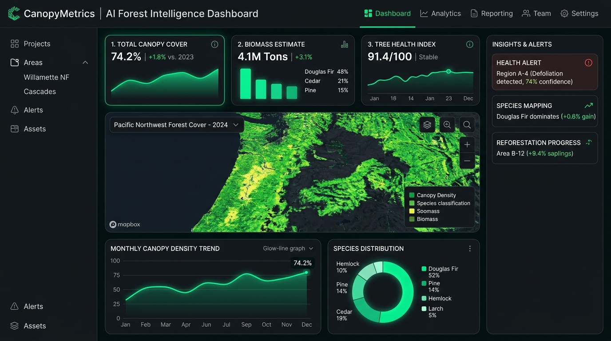

CanopyMetrics — AI Forest Telemetry
Platform intelijen citra satelit dan estimasi biomassa kanopi pohon secara real-time. Memvisualisasikan tutupan vegetasi hutan dengan algoritma deep learning dan data geospasial presisi tinggi.
Akurasi estimasi biomassa mencapai 94.8%
Render interaktif jutaan titik poligon WebGL 60 FPS